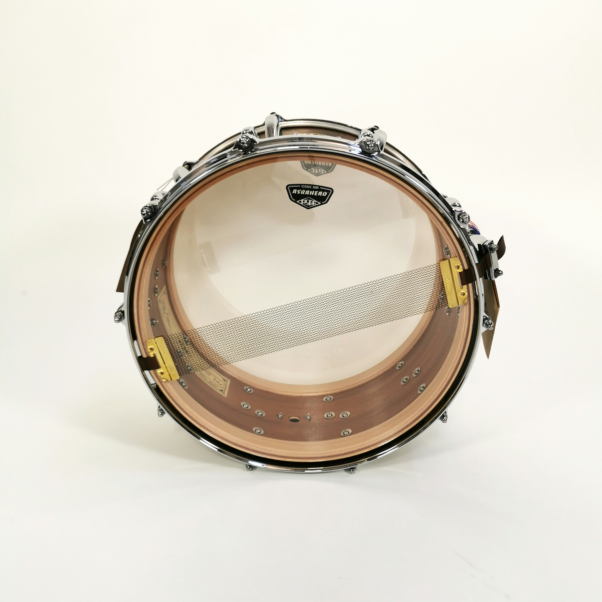

Description:
The bass drum is a large percussion instrument known for its deep, powerful, and booming sound. It is commonly used in concert bands, marching bands, orchestras, drum lines, and drum sets. The main parts of a bass drum include the drumheads, shell, hoops, tension rods, and mounting or support hardware. Its large size allows it to produce very low sounds that help provide rhythm and impact.

How to Play the Bass Drum:
The bass drum is played by striking the drumhead with a large mallet or beater. In concert and marching settings, the player usually strikes the drum by hand with a mallet. On a drum set, the bass drum is played using a foot pedal connected to a beater. The player can change the sound by adjusting how hard and where the drum is struck.